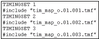

The Timing Map File
Timing map files define the translation rules according to which the state characters within the ASCII vector file are converted into physical waveform DC/DC power units. Single state characters can be converted to single DC/DC power units, but also to index sequences, and state character sequences can be translated into single DC/DC power units as well as into index sequences (for details see Calculating the Lengths of the State Character and the Index Sequences). Every single rule refers to a certain combination of an ASCII device cycle (sequence) and a pin.
Normally, every equation set is associated with a separate timing map file. The timing map file consists of one or more blocks each of which belongs to one of the timing sets contained in this equation set. You can store data to be used in more than one timing map file separately and use the #include statement in order to incorporate it wherever it is needed.
ait automatically creates a separate timing map file for every equation set. It generates one main file, and second level files for every timing set of the respective equation set. The main file specifies for every timing set the associated second level file by an #include statement. The following figure shows an example:

The names of these files are created from the name specified for the -o parameter of ait. For the main files, the complete format of the name is
<name>.<eq_set_no>.tmf,
and for the secondary files, it is
<name>.<eq_set_no>.<timing_set_no>.tmf.
ait also specifies the appropriate timing map files for the patterns in the vector configuration file of aiv. You can control the state character sequences for which entries are created by passing an x-mode control file to ait (see The X-Mode Control File (*.cmb)).
If you use the vector translation without the timing translation, you must generate the timing map files manually and specify the appropriate timing map file for every pattern in the vector configuration file.
You can insert comments into the file. These are identified by the hash character (#); if this character occurs in a line, the rest of the line after the hash character will be considered as a comment.